Presentation¶
Let  be a triangular (2d) or tetrahedral (3d) mesh of 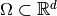 corresponding
to the following data structure:
be a triangular (2d) or tetrahedral (3d) mesh of 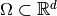 corresponding
to the following data structure:
![\mbox{\begin{tabular}{lccll}
\hline
\textbf{name} & \textbf{type} & \textbf{dimension} & \textbf{description}\\
\hline
$\nq$ & integer & 1 & number of vertices\\
$\nme$ & integer & 1 & number of elements\\
$\q$ & double & $d \times \nq$ &
\begin{minipage}[t]{7.9cm}
array of vertices coordinates. $\q(\nu,j)$ is the $\nu$-th coordinate of the $j$-th vertex,
$\nu\in\{1,\hdots,d\}$, $j\in\{1,\hdots,\rm{n_q}\}.$
The $j$-th vertex will be also denoted by $\rm{q}^j$
\end{minipage}\\
$\me$ & integer & $(d+1) \times \nme$ &
\begin{minipage}[t]{7.9cm}
connectivity array. $\me(\beta,k)$ is the storage index of the $\beta$-th vertex
of the $k$-th element, in the array~$q$, for $\beta\in\{1,\hdots,(d+1)\}$ and $k\in\{1,\hdots,{\nme}\}$
\end{minipage}\\
$\rm volumes$ & double & $1\times {\nme}$ &
\begin{minipage}[t]{7.9cm}
array of volumes in 3d or areas in 2d. ${\rm volumes}(k)$ is the $k$-th element volume (3d)
or element area (2d),
$k\in\{1,\hdots,{\nme}\}$
\end{minipage}\\
\hline
\end{tabular}}](_images/math/3b9d77cd2d39a25075a99c7e6376dce26018b9ed.png)
Scalar finite elements :
Let 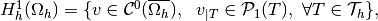 be the finite dimensional space spanned by the 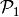-Lagrange (scalar) basis functions 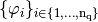 where 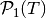 denotes the space of all polynomials defined over T of total degree less than or equal to
 The functions
The functions  satisfy
satisfy
Then we have 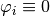 on
 , 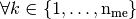
such that 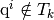.
, 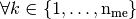
such that 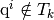.A -Lagrange (scalar) finite element matrix is of the generic form
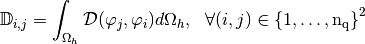
where is the bilinear differential operator (order
 )
defined for all 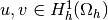 by
)
defined for all 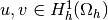 by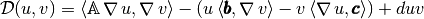
and 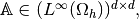 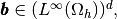
 and 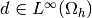 are given functions on 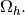
and 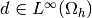 are given functions on 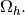We can notice that is a sparse matrix due to support properties of
functions.Let 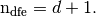 The element matrix 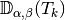, associated to , is the
 matrix defined by
matrix defined by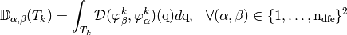
where 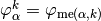 is the
 -th local basis function associated
to the
-th local basis function associated
to the  -th element.
-th element.For examples,
the Mass matrix is defined by
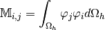
The corresponding bilinear differential operator is completely defined with 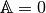, 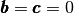 and 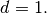
the Stiffness matrix is defined by
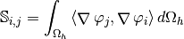
The corresponding bilinear differential operator is completely defined with 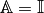, and

Vector finite elements :
The dimension of the space 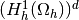 is 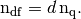
in dimension 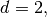 we have two natural basis :
the global alternate basis
 defined by
defined by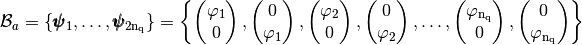
and the global block basis
 defined by
defined by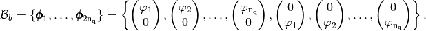
in dimension 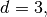 we have two natural basis :
the global alternate basis
defined by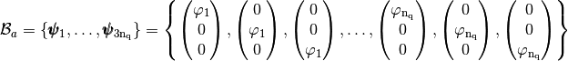
and the global block basis
defined by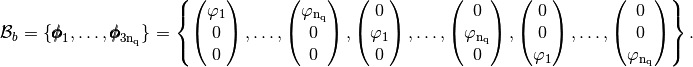
A -Lagrange (vector) finite element matrix in
basis
is of the generic form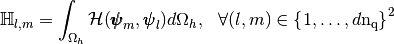
where
 is the bilinear differential operator (order )
defined by
is the bilinear differential operator (order )
defined by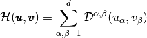
and 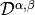 is a bilinear differential operator of scalar type.
For example, in dimension the Elastic Stiffness matrix is defined by

where
 is the strain tensor respectively and 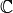 is the Hooke matrix
is the strain tensor respectively and 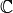 is the Hooke matrix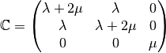
Then the bilinear differential operator associated to this matrix is given by
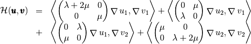
We present now three algorithms (base, OptV1 and OptV2 versions) for assembling this kind of matrix.
Note
These algorithms can be successfully implemented in various interpreted languages under some assumptions. For all versions, it must have a sparse matrix implementation. For OptV1 and OptV2 versions, we also need a particular sparse matrix constructor (see Sparse matrix requirement). And, finally, OptV2 also required that the interpreted languages support classical vectorization operations. Here is the current list of interpreted languages for which we have successfully implemented these three algorithms :
- Python with Numpy and Scipy modules,
- Matlab,
- Octave,
- Scilab
Classical assembly algorithm (base version)¶
Due to support properties of  -Lagrange basis functions, we have the classical algorithm :
-Lagrange basis functions, we have the classical algorithm :
Note
We recall the classical matrix assembly in dimension  with
with
Figure 43: Classical matrix assembly in 2d or 3d
In fact, for each element we add its element matrix to the global sparse matrix (lines 4 to 10 of the previous algorithm). This operation is illustrated in the following figure in 2d scalar fields case :
Figure 44: Adding of an element matrix to global matrix in 2d scalar fields case
The repetition of elements insertion in sparse matrix is very expensive.
Sparse matrix requirement¶
The interpreted language must contain a function to generate a sparse matrix M from three 1d arrays of same length Ig, Jg and Kg such that M(Ig(k),Jg(k))=Kg(k) . Furthermore, the elements of Kg having the same indices in Ig and Jg must be summed.
- We give for several interpreted languages the corresponding function :
- Python (scipy.sparse module) : M=sparse.<format>_matrix(Kg,(Ig,Jg),shape=(m,n) where <format> is the sparse matrix format chosen in csc , csr , lil ,...
- Matlab : M=sparse(Ig,Jg,Kg,m,n), only csc format.
- Octave : M=sparse(Ig,Jg,Kg,m,n), only csc format.
- Scilab : M=sparse([Ig,Jg],Kg,[m,n]), only row-by-row format.
Obviously, this kind of function exists in compiled languages. For example, in C language, one can use the SuiteSparse from T. Davis and with Nvidia GPU, one can use Thrust library.
Optimized classical assembly algorithm (OptV1 version)¶
The idea is to create three global 1d-arrays 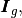 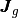 and 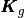
allowing the storage of the element matrices as well as the position of their elements in the global matrix.
The length of each array is 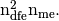 (i.e.  for 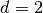 and
for 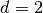 and  for
for  ).
Once these arrays are created, the matrix assembly is obtained with one of the previous commands.
).
Once these arrays are created, the matrix assembly is obtained with one of the previous commands.
To create these three arrays, we first define three local 1d-arrays 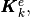 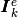 and 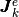 of 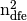 elements obtained from a generic element matrix of dimension :

From these arrays, it is then possible to build the three global arrays
and of size
defined,
 by
by
So, for each triangle , we have
Then, a simple algorithm can build these three arrays using a loop over each triangle.
New Optimized assembly algorithm (OptV2 version)¶
We present the optimized version 2 algorithm where no loop is used.
We define three 2d-arrays that allow to store all the element matrices
as well as their positions in the global matrix. We denote by
and  these
these  arrays, defined
by
arrays, defined
by
(1)
The three local arrays and are thus stored
in the column of the global arrays and respectively.
A natural way to build these three arrays consists in using a loop through the triangles
in which we insert the local arrays column-wise
 and with loop
and with loopThe natural construction of these three arrays is done column-wise. So, for each array there are
 columns to compute, which depends on the mesh size.
To vectorize, we must fill these arrays by row-wise operations and then for each array there are
rows to compute. We recall that does not depend on the mesh size.
These rows insertions are represented in Figure 49 . We can also remark that,
, with
columns to compute, which depends on the mesh size.
To vectorize, we must fill these arrays by row-wise operations and then for each array there are
rows to compute. We recall that does not depend on the mesh size.
These rows insertions are represented in Figure 49 . We can also remark that,
, with
where, in scalar fields case,  and in vector fields case,
and in vector fields case,
As we can see in Figures 50 and 51,
it is quite easy to vectorize and computations in scalar fields case
by filling these arrays lines by lines :
Using vectorization tools, we can compute and in one line. The vectorized algorithms in 2d and 3d scalar fields are represented by Figure 52.
In vector fields case, we construct the tabular such that
Then we can vectorize and computations in vector fields case.
We represent in Figure 53 these operations in 2d.
Now, it remains to vectorize the computation of  array
which contains all the element matrices associated to or
array
which contains all the element matrices associated to or  :
it should be done by row-wise vector operations.
:
it should be done by row-wise vector operations.
We now describe a vectorized construction of array associated to a generic
bilinear form  . For the mesh element , the element matrix is then given by
. For the mesh element , the element matrix is then given by

Figure 55: Construction of for Mass matrix

{kind=link}
{kind=link}
{kind=link}
{kind=link}
{kind=link}
{kind=link}
{kind=link}
{kind=link}
{kind=link}
{kind=link}
{kind=link}